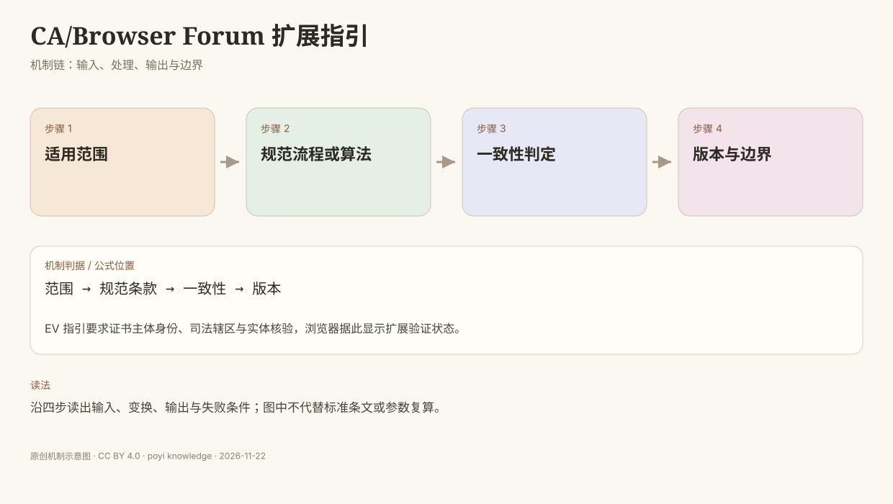
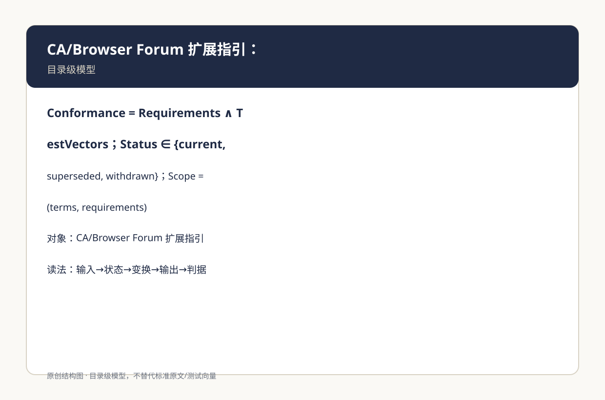

原理与机制
标准：CA/Browser Forum 扩展指引（CA/Browser Forum Extended Validation Guidelines）。### 机制链

为什么重要
缺少其中任一环，读者只能记住名称，无法判断它在什么时候有效。
应用与实例
1.定位输入：先确认“适用范围”与“规范流程或算法”，不要把场景标签当作输入。2.复述变换：按“一致性判定”说明每一步谁执行、改变什么状态。3.检查输出：用“版本与边界”判断成功或失败，而不是只看标题。4.

边界与攻击面
已知风险标签：protocol。不要把该条目与相邻条目合并；关联条目是不同概念。
历史与背景
技术参数与复算边界
该条目的形式模型是 (S=\min_i S_i,\quad S_i\in{\text{密钥强度},\text{分组安全},\text{实现安全}})。输入：输入：CA/Browser Forum 扩展指引的公开参数、密钥/随机数与消息；变量说明：S 为综合安全强度；各分量取最小值，不能只看密钥位数。 预期输出：按 CA/Browser Forum 扩展指引 的规范执行后得到可验证的输出或可比较的优势界。 复算必须给出输入、步骤、输出和单位；示例只演示流程，不替代标准测试向量。
复杂度由密钥长度、分组/状态规模、轮数、随机数质量和敌手模型共同决定；参数越界、版本差异与实现侧信道都可能使公式结论失效。已登记限制：该条目只给出形式模型与可复算步骤，不声称已完成生产实现、侧信道认证或第三方安全评估。
参数与状态规模
公式 (S=\min_i S_i,\quad S_i\in{\text{密钥强度},\text{分组安全},\text{实现安全}}) 的输入、输出和单位必须逐项登记；复算顺序为：1. 读取标准规定的密钥/分组/模式参数 2. 按标准表换算等效强度 3. 取最弱分量作为系统强度。
状态规模、密钥长度、分组长度和轮数决定复杂度；这些量不能从标题推断，必须以标准或实现文档为准。
测试向量与实现边界
标准测试向量只证明某组输入在某个实现中产生了预期输出，不证明所有参数都安全。记录测试向量时至少要写：算法/模式、密钥、明文或消息、随机数/IV、输出长度、实现版本。该条目已登记的限制是：该条目只给出形式模型与可复算步骤，不声称已完成生产实现、侧信道认证或第三方安全评估。
如果实现使用查表、分支或可变时间操作，算法层的证明不能替代侧信道评估；如果协议层没有认证，算法层的机密性也不能阻止替换或重放。
阅读路线与误用
把 CA/Browser Forum 扩展指引 当成“能加密”是不够的：要说明它接受什么输入、在什么假设下成立、输出交给谁。
常见误用包括把示例参数当唯一合法参数、把算法标准当实现认证、把一次测试向量当全参数证明。正文与计算记录要分别标明“来源事实”“形式模型”“未核空白”。
实现与复核清单
检查 CA/Browser Forum 扩展指引 时逐项回答：输入编码是否与规范一致；密钥、IV/随机数和参数是否在允许范围；轮数、字长和填充是否按版本执行；输出是否与独立实现逐字节一致；失败路径是否泄露时序或错误细节。五项中任何一项没有记录，就只能标为“结构复算”，不能标为“实现验证”。
来源、版本与复现
CA/Browser Forum 扩展指引的结论必须绑定具体版本：标准号、草案/正式版、实现版本、测试向量来源。复现记录要写运行环境与字节级输出；只写“通过”不写参数，无法复核。
复杂度与安全目标
评估 CA/Browser Forum 扩展指引 时不只看单次运算，还要看密钥/状态规模、轮数、随机数质量、敌手模型与侧信道暴露。算法层的安全目标不能自动变成协议层或实现层的安全结论。
失败条件
参数越界、版本混用、错误填充、缺少认证和实现时序差异，都会让 CA/Browser Forum 扩展指引 的“标准结论”失效。正文只在有来源支持时写具体常量；没有来源的测试值不补写。
逐步示例与核验
形式模型与复算步骤
[S=\min_i S_i,\quad S_i\in{\text{密钥强度},\text{分组安全},\text{实现安全}}]
CA/Browser Forum 扩展指引的公开参数、密钥/随机数与消息；变量说明：S 为综合安全强度；各分量取最小值，不能只看密钥位数。1.读取标准规定的密钥/分组/模式参数。2.按标准表换算等效强度。3.取最弱分量作为系统强度。边界：公式只覆盖已登记的参数与假设；参数取值、标准版本和实现细节仍以来源为准。
参考出处
- Wikipedia search entry for CA/Browser Forum 扩展指引. https://zh.wikipedia.org/w/index.php?search=CA%2FBrowser%20Forum%20%E6%89%A9%E5%B1%95%E6%8C%87%E5%BC%95
- Handbook of Applied Cryptography (Menezes, van Oorschot, Vanstone). https://www.cacr.math.uwaterloo.ca/hac/